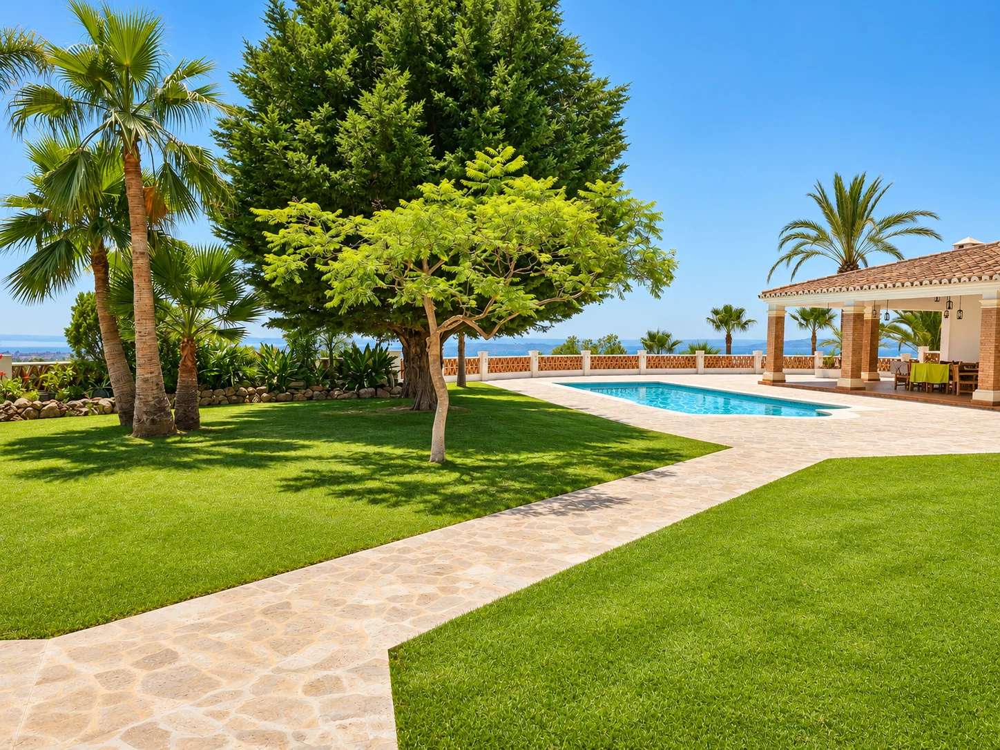

01 / LA ESENCIA
EL ARTE DE VIVIR
Hay lugares que
simplemente se sienten.
Hay lugares cuyo carácter no puede medirse solo en metros cuadrados. Lugares en los que la luz, el paisaje y la calma crean una atmósfera propia.
Situada sobre la costa, en la urbanización privada La Alquería, CASA ROMANO reúne arquitectura mediterránea tradicional, espacios llenos de luz, jardines consolidados y amplias perspectivas hacia el mar.
Desde la primera luz de la mañana hasta el brillo lejano de la costa al anochecer, la residencia invita a vivir a otro ritmo, más sereno y consciente.
Descubrir la vida exterior